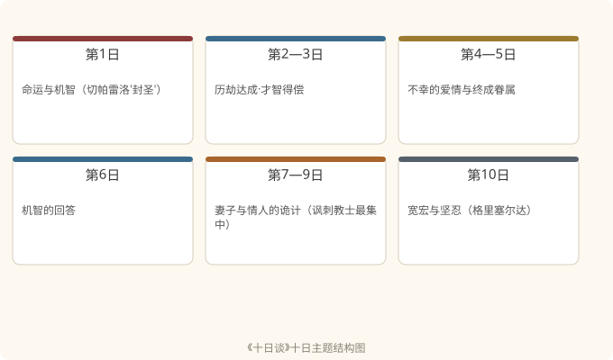

十日谈
一、基本信息
| 作者 | 薄伽丘 |
|---|---|
| 成书/出版 | 约1349—1353年（Britannica 两口径并存） Decameron — Encyclopaedia Britannica（百科全书） |
| 国别/地区 | 意大利 |
| 时代 | 古代 · 中世纪—文艺复兴 |
| 体裁 | 短篇故事集（框架叙事，100篇） |
| 语言 | 意大利语（佛罗伦萨俗语） |

二、创作背景
1348年黑死病夺去佛罗伦萨过半人口（Britannica 记薄伽丘当时在佛罗伦萨亲历大疫）。小说的框架即由这场灾难驱动：七女三男为避疫逃到菲耶索莱乡间别墅，以讲故事消磨十天。
写作年代：Britannica 作品条目称'probably composed between 1349 and 1353'；作家条目作'c. 1348–53'——两说并存，本页取1349—1353。
书名 Decameron（希腊语'十日之作'）由作者自拟；每十天为一个叙事单元，每天由一位'国王/女王'定题（Britannica：Each rules for a day and sets the daily theme）。
三、内容脉络
框架：1348年佛罗伦萨瘟疫（序章对大疫的纪实描写是意大利文学最著名的'末日图景'）；十名青年（七女三男）携仆逃往乡下别墅，约定每日每人讲一个故事、共讲十日百篇，'以故事驱散死亡的阴影'（意译，原文待核）。
每日主题（Britannica 列举）：第一天：命运与机智；第二天：历尽波折后达成的目标；第三天：凭才智获得所求；第四天：不幸的爱情；第五天：有情人历尽磨难终成眷属；第六天：机智的回答；第七至九天：妻子对丈夫的诡计与情人们的捉弄；第十天：宽宏与高贵的行为（末篇'坚忍的格里塞尔达'）。
名篇举隅：第一天故事一（切帕雷洛临终骗忏悔、被封'圣贤'——'别问我的良心，问我欠的钱'式的辛辣讽刺教士）；第四天故事一（Day 4 story 1，吉斯蒙达抗父）；第五天故事九（费德里哥杀鹰待客）；第十天故事十（格里塞尔达）。
四、主要人物表
| 人物 | 身份 | 说明 |
|---|---|---|
| 十位叙述者 | 七女（潘皮内娅等）三男（潘菲洛、菲洛特拉托、迪奥内奥） | 每人有名有姓有性格，轮流'执政'定题——迪奥内奥（Dioneo）自由讲故事权最富戏剧性 |
| 切帕雷洛 | 狡猾的公证人 | 第一日第一篇：坏人的'封圣'——对教会伪善的巅峰讽刺 |
| 格里塞尔达 | 农妇→侯爵夫人 | 末篇：以绝对顺从测试的贤妻寓言（争议名篇） |
| 费德里哥 | 落魄骑士 | 杀最后一只鹰款待心上人——慷慨的极致 |
五、主题与艺术特点
- 以故事抵抗死亡：大疫之下讲故事的秩序本身就是文明的宣言——叙述共同体对抗崩溃的世界。
- 对教会伪善的讽刺：修士修女的通奸与贪婪贯穿全书——'人文主义对中世纪教士文化的清算'（通说概括）。
- 市民伦理的胜利：智慧、财富、灵活与'运气'（fortuna）取代贵族血统成为价值尺度（Britannica：stressing human ability to overcome fortune）。
- 爱情与欲望的正名：婚外情、机灵女、大胆欲望被自然主义地叙述——薄伽丘'affirmed moral values even in licentious passages'（Britannica：即使在放荡段落也坚持道德价值）。
- 艺术特点：框架叙事装置、每天开篇的'歌谣'（canzone，Britannica：Each day ends with a canzone）、佛罗伦萨口语的成熟与优雅。
六、影响与评论
- Britannica Decameron 条目：'a masterpiece of classical Italian prose'；'breaks from medieval sensibility'——强调人克服命运的能力。
Decameron — Encyclopaedia Britannica（百科全书） - Britannica：有批评者斥其为'vulgar and cynical'（粗俗而愤世）——争议从当时延续到今天，各方说法并存。
Decameron — Encyclopaedia Britannica（百科全书） - Britannica（Boccaccio 条目）：乔叟据《菲洛斯特拉托》写《特洛伊罗斯与克瑞西达》、据《苔塞伊达》写《骑士的故事》；莎士比亚用同一特洛伊题材——影响链清晰。
Giovanni Boccaccio — Encyclopaedia Britannica (by Umberto Bosco)（百科全书） - 框架结构传统：'十人十日百篇'装置影响《坎特伯雷故事》与后世选集叙事（本条为文学史通说）。
Decameron — Encyclopaedia Britannica（百科全书）
七、阅读建议
- 百篇篇幅大，宜按'每日主题'分周阅读（每天读一日）。
- 佛罗伦萨人名与地名密集，注释本不可缺。
- 有些故事粗俗（尤其第7—9日），与学术阅读语境的落差需要心理调适——理解其'反中世纪'的意图。
- 方平、王科一译《十日谈》（上海译文出版社）：通行全译。
- 《十日谈》选本（如'名著名译插图本'系列）：入门选择。
- 英译：Guido Waldman 译（Oxford World's Classics）或 G. H. McWilliam（Penguin，通说待核）。
先读序章（瘟疫描写）与第一天 → 挑读名篇（切帕雷洛、费德里哥、格里塞尔达）→ 按日通读 → 对照乔叟《坎特伯雷故事》看框架叙事的转移。
八、待核实
- 写作年代两口径（c.1348–53 / 1349–53）并存，本页并列。
- 每日主题划分的不同版本（部分抄本第9日主题有异）待核。
- 方平译本的底本与删节情况待核。
- '以故事驱散死亡'等序章引语的逐字核对待完成。
本页主要来源
- Decameron — Encyclopaedia Britannica（百科全书）
- Giovanni Boccaccio — Encyclopaedia Britannica (by Umberto Bosco)（百科全书）
薄伽丘的其他收录作品：十日谈